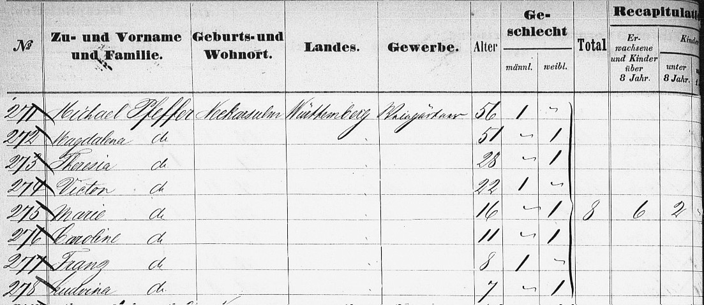
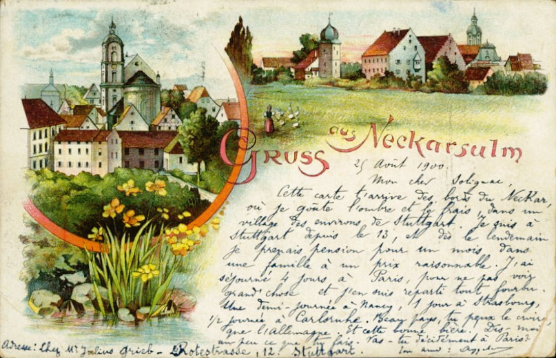
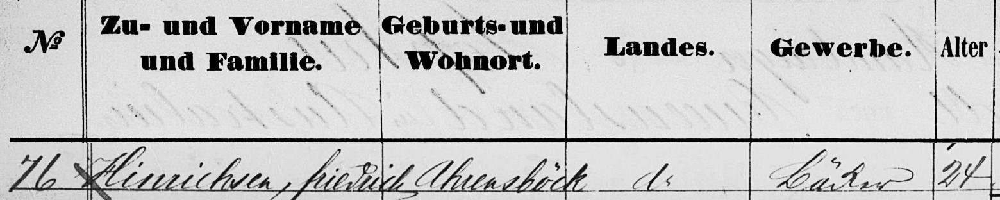
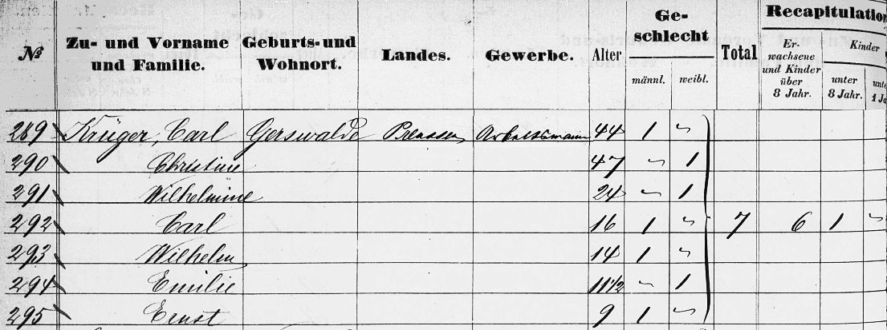
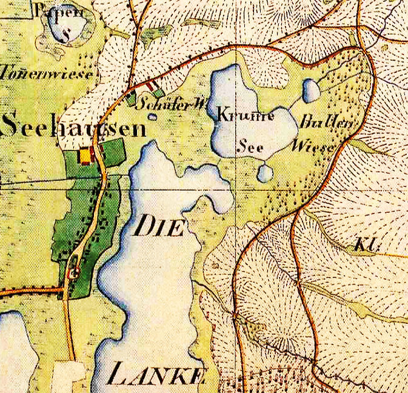
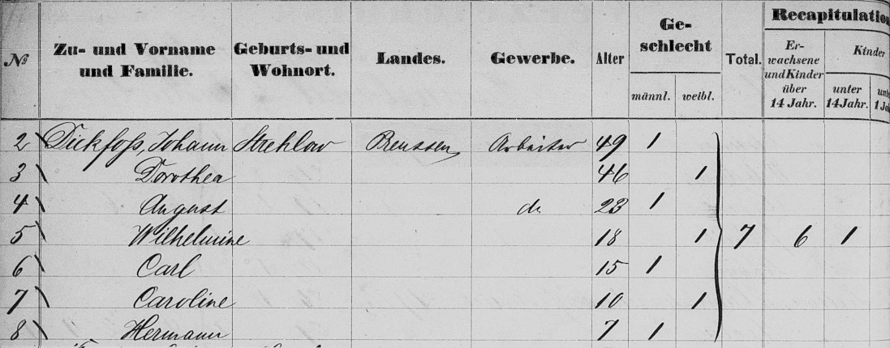
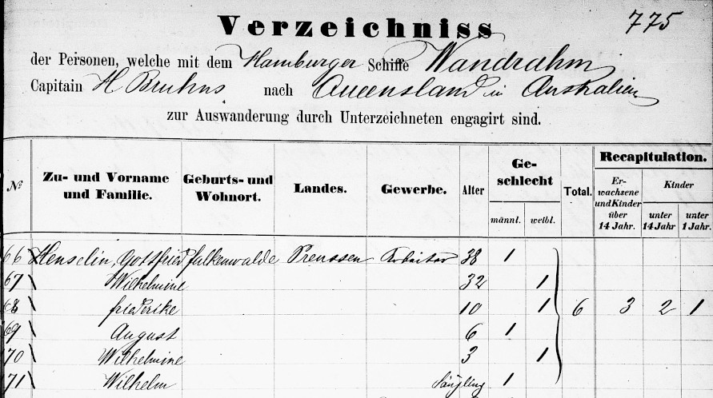
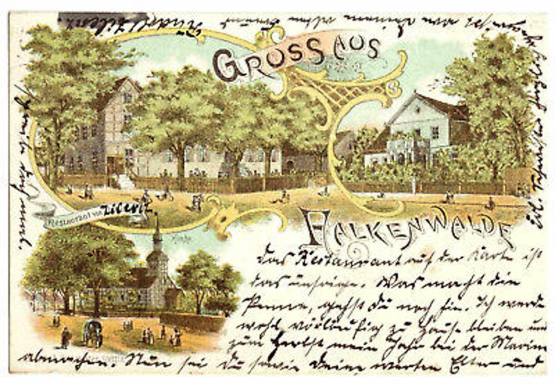
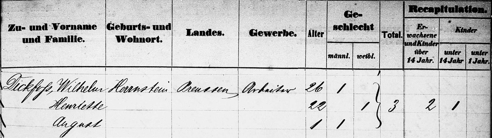
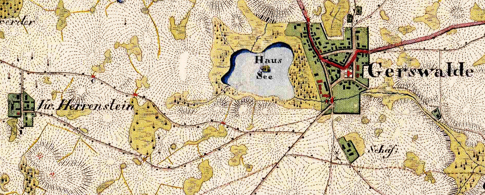

-
Who left Germany - Part 2
Many of our ancestors who had migrated from Germany naturally enough ended up in the same places as many other migrants, oftentimes marrying them. This page covers those related individuals and families who risked life and limb to find a new start in a new world. The migration of these people was the responsibility of an agent who somehow convinced them to leave their homes and go to Australia and most, if not all, of them were brought out by » J. C. Heussler and Co., Agents. -
Susanne Godeffroy

dep. Hamburg 19 Sep 1863
arr. Moreton Bay 18 Jan 1864
Captain: H. Müller
Agent: J. C. Heussler & Co.Michael, Magdalena and family on board the Susanne Godeffroy
1863 Michael and Magdalena Pfeffer
Joseph Michael Pfeffer and his wife Magdalena Elisabetha Krämer, along with six of their children left their home in Neckarsulm to board the Susanne Godeffroy, leaving Hamburg on the 19th of September, 1863 and reaching Moreton Bay on the 18th of January, the next year. One of their sons, Peter Joseph Pfeffer who was already 31 and married, when the rest of his family left, stayed behind. Sadly he died in Neckarsulm only five years later.
Another son, Victor Francis Pfeffer was a very close friend to our 2x great-grandfather, Johann Heinrich Schneider. Victor married Friederike Schulz, the sister of our great-grandmother Ernestine Schulz whose granddaughter, Adelaide Pieper, married Victor Pfeffer's son William. There are lots of other inter-marryings too.
In 1864, the Susanne Godeffroy was reported to be a new ship classed as A1, weighing 914 tons of British measurement. The ship was built in Lübeck for Godeffroy & Co. and this was its first voyage. The time from Lizard Point to first sighting was reckoned to be a run of 98 days.The trip was a rough one, starting immediately with severe weather which detained the ship 15 days in the North Sea. That was followed by contrary winds between the British Coast and Madeira. The trade winds carried her to the Cape of Good Hope but from there to the island of Tristan d'Acunha again there was heavy weather which sprung the main mast, foremast, foretopmast and fore yard. Nonetheless, from there, Tasmania was made in 30 days and Cape Moreton in another ten. Dr. Hobbs, the health officer, visited the ship on the evening of Tuesday the 19th and found the 369 German immigrants, many of whom were skilled workmen, in good health.An old postcard announcing Greetings from Neckarsulm
Their cargo included: 1 case pianos, 2 cases cigars, 2 casks hams, 138 cases, 30 half-barrels, 15 quarter-barrels herrings, 10 cases wine, 10 cases seltzer water, 27 cases liquors, 816 packages, 2 packages victuals, 1 parcel publications for Prussian Consulate and 40,600 fire bricks. All in all there were 550 German immigrants on board.
Incidentally, also on board this ship was the Lobegeiger family, namely Wilhelmine Lobegeiger, nee Topp who, after the early death of her husband, eventually married our 2x great-grandfather, Johann Heinrich Schneider, mentioned earlier.
-
Sophie

dep. Hamburg 23 Apr 1865
arr. Moreton Bay 21 Aug 1865
Captain: Wendt
Agent: J. C. Heussler & Co.Friedrich Hinrichsen from Ahrensbök, Baker, 24, on board the Sophie
1865 Friedrich Hinrichsen
Johann Joachim Friedrich Hinrichsen, known as Friedrich, who was a baker from Ahrensbök, migrated to the new Colony of Queensland on the same ship as the family of Georg and Heinricke Schneider. In fact, exactly one year after their arrival, Friedrich married the second eldest daughter of the Schneiders, Friederike Sophie. The event occurred in the Baptist Church in North Ipswich.
Postcard with scenes from around Ahrensböck
The Sophie departed Hamburg on April 23, 1865 under the command of Captain Wendt and arrived in Moreton Bay four months later, anchoring on August 17th. The 29 passengers who disembarked first needed a clean bill of health from the medical officer for which they had to wait until the 20th. On the 21st, the ship continued on with the rest of its 164 passengers and cargo to Maryborough.
-
Susanne Godeffroy

dep. Hamburg 6 May 1865
arr. Moreton Bay 6 Sep 1865
Captain: H. Müller
Agent: J. C. Heussler & Co.The Krüger family on board the Susanne Godeffroy
The arrival of the Krüger family in Brisbane
1865 Carl and Johanne Krüger
In 1926, when Pastor Carl Krüger was 76 years old, he wrote an autobiography documenting his life up to the age of 16 and how he and his six younger siblings migrated to Queensland with their parents, Carl and Johanne. Carl junior was born in a place called Seehausen on the shore of one of the Ucker Lakes but when he was three his parents relocated the family to Stegelitz.Seehausen on a Prussian map
The voyage to the Great South Land began in Hamburg on May 6, 1865 but was not without peril. Having reached the Bay of Biscay they were caught in a tornado. The ship was set on its side and the passengers, having expected the worst, tried to clamber their way on deck only to find that they were locked in, which proved later to have prevented any of them from being washed overboard.
After a long period of nothing but the deafening noise of the storm, they heard a sound like an explosion. Slowly the vessel righted itself and the sailors began to sing. They were told the next morning that the storm had torn away five of the biggest and principal sails and thrown them into the sea and that was what saved them. Yet Carl held steadfast to his notion that a knife or some other cutting instrument had helped to cut them loose.
After a rather adventurous trip, they sailed into Moreton Bay on September 6, 1865. In 1872, Carl married Johanna Lobegeiger, the sister of our 2x great-grandfather, Fred Lobegeiger. Carl's sister, Emily Krüger, married Johannes Lobegeier, the son of Wilhelmine nee Topp, our 2x great-grandmother, from her first marriage to Friedrich Lobegeier. Wilhelmine's second marriage was to our 2x great-grandfather, Johann Heinrich Schneider, the elder. Johann Heinrich, who was already a Baptist minister, was the one who baptised the young Carl Kruger and introduced him to a life of service to the church.
-
Cesar Godeffroy

dep. Hamburg 13 Oct 1865
arr. Moreton Bay 14 Feb 1866
Captain: Adalbert Decker
Agent: J. C. Heussler & Co.Johann and Dorothea with their children on board the Cesar Godeffroy
1865 Johann and Dorothea Dickfoss
Johann Christian Friedrich Dickfoss and his second wife Dorothea, nee Runge, left their home in Strehlow in the Uckermark of Prussia on the 13th of October, 1865 departing from Hamburg on board the Cesar Godeffroy, a ship built in Hamburg in 1865.
Strehlow is a village that lies a couple of kilometers north east of the Oberuckersee (Upper-Ucker-Lake) in the Uckermark. Their particular place of abode was most likely the Gutshof (Estate) belonging to the von Arnim family, originally known as a Ritterhof (Knight's Estate).
Nowadays Strehlow belongs to Potzlow in the district of the Oberuckersee which in turn is part of the Uckermark. The village was first written down in 1317 as Strele, and was later known as Stelow. The name is derived from a Slavic word meaning 'arrow' noting its location on the Mühlgraben which flows into the Ucker River.
The only child from Johann's first marriage to Johanne Friederike Riek, was named Johann Friedrich August Dickfoss, known later as simply August Dickfos, dropping one 's' on the end as was the fashion in Australia. He married Heinricke Sophie Schneider, the daughter of Johann Georg Schneider, in 1869. The eldest son of Johann and Dorothea, Johann Carl Dickfos, married Christine Schneider, another child of Johann Georg Schneider, in 1871. The second youngest child of Johann and Dorothea, Johanna Caroline Wilhelmine Dickfos (Caroline), married another child of Johann Georg Schneider, Gottfried Friedrich Schneider (Fred), also in 1871.
-
Wandrahm

Hamburg 15 Sep 1865 - Moreton Bay 12 Jan 1866
Captain: Henrick Bruhns
Agent: J. C. Heussler & Co.The Henselin family on board the Wandrahm
1866 Gottfried and Wilhelmine Henselin
Christian Friedrich Gottfried Henselin and his wife Maria Wilhelmine Dorothea Litzow along with the first four of their children, departed Hamburg on board the Wandrahm on the 15th of September, 1865 and sailed into Moreton Bay on January 13. One of those children, the eldest, was Auguste Wilhelmine Marie Ernestine Friederike Henselin who eventually married Johann Georg Schneider, the younger, in Ipswich on November 16, 1872.Scenes from an old postcard.
Greetings from Falkenwalde
Yet, the trip was not a good one. Many deaths occurred on board and a court inquiry was held to investigate the behaviour of the captain who was ultimately blamed for the horror inflicted upon the passengers.
Falkenwalde in the Uckermark of Preussen
The Henselin family came from a place called Falkenwalde, which not only boasts remnants from the stone age and Slavic settlement from the early middle ages but more recently, in 1357, it was already mentioned as Valkenworde in the historically important medieval record known as the Landbuch der Mark Brandenburg. From 1993 to 2001 it was an independent community within the Uckermark but nowadays is part of Uckerfelde.
-
Wandrahm

Hamburg 15 Sep 1865 - Moreton Bay 12 Jan 1866
Captain: Heinrich Bruhns
Agent: J. C. Heussler & Co.The Dickfoss family on board the Wandrahm
1866 Wilhelm and Henriette Dickfoss
Carl Friedrich Wilhelm Dickfoss and his wife Wilhelmine Caroline Henriette Hass and their 1 year old son, August, departed Hamburg on board the Wandrahm on the 15th of September, 1865 and sailed into Moreton Bay on January 13.
Yet, the trip was not a good one. An enormous number of deaths and cases of sickness occurred on board and a court inquiry was held to investigate the behaviour of the captain who was ultimately blamed for the horror inflicted upon the passengers.
Tragically the little August Dickfoss was one of those victims who died on the ship.Herrenstein in the Uckermark of Preussen
This branch of the Dickfoss family came from a place called Herrenstein, which was founded in 1755 by Otto von Arnim as a Vorwerk belonging to Gerswalde. In 1821 it was officially called Herrenstein. By 1860 Herrenstein had 146 inhabitants, 11 dwellings, 26 outbuildings, 48 horses, 47 cows and 1600 sheep.An old map showing Herrenstein 2.5 km west of Gerswalde

{kind=link}
{kind=link}
{kind=link}
{kind=link}
{kind=link}
{kind=link}
{kind=link}
{kind=link}
{kind=link}
{kind=link}
{kind=link}
{kind=link}
{kind=link}
{kind=link}
{kind=link}
About Us
We are the descendants of Anglo-Scottish-Prusso-Germanic Australian migrants who settled in the newly formed colonies of New South Wales and Queensland in the nineteenth century. The idea behind these pages is to present the stories and characters of those early settlers along with information about their origins, descendants, families, whereabouts and activities.There are often themes running through their struggles and achievements telling a tale of resourcefulness and hardships in an alien world. The paradox of Australia as an ancient and raw continent and as a 'New World' portrays a collision of ideals and realities yet still shows a continuity in how those people dealt with everyday life.